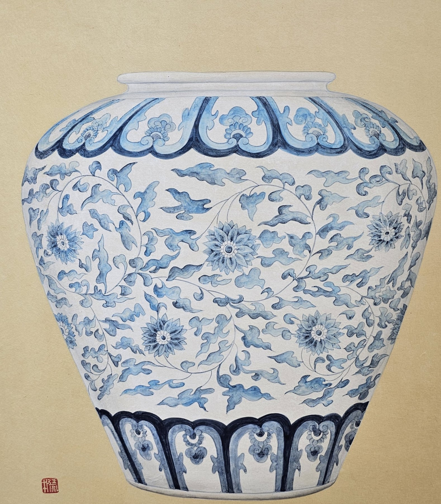

어깨가 넉넉하게 벌어진 백자 항아리가 정면으로 놓였습니다. 몸통에는 국화 덩굴이 가로로 돌고, 어깨와 굽에는 연꽃잎 무늬 띠가 옷깃처럼 둘렸습니다.
국화는 다른 꽃이 다 진 뒤에 피어 지조와 오랜 삶을 뜻합니다. 덩굴은 이어짐을 뜻하니, 국화가 덩굴로 감기면 오래도록 끊이지 않는 삶이 됩니다.
사진처럼 보이지만 꽃잎 하나하나가 붓으로 올린 것입니다.
이 작품 구입을 원하시면 갤러리 데스크로 말씀해 주세요.